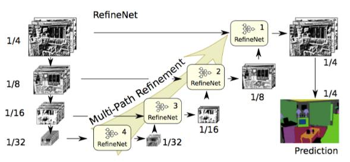
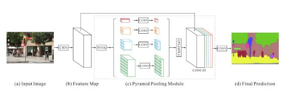
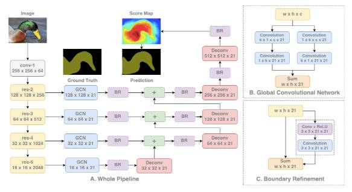
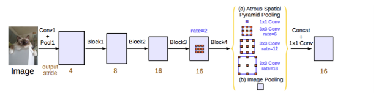
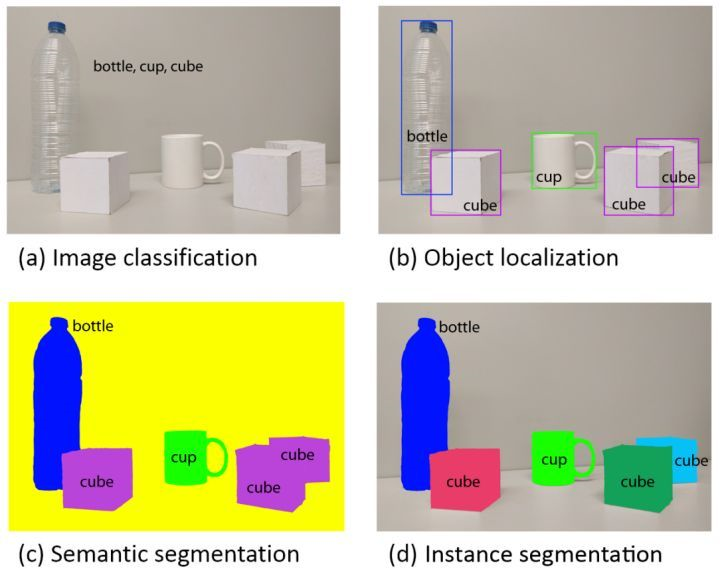

1 研究历史
patch classification
最初的图像语义分割方法，费时费力
FCN(2014)
FCN 使用反卷积（与upsamping的区别是可学习）取代简单的线性插值算法进行上采样
SegNet (2015)
SegNet使用upsampling的方法将编码过程中 pool 的位置记下来在 uppooling 是使用该信息进行pooling
U-Net (2015)
在前者的基础上进行的改进，将编码器的每层结果拼接到译码器中得到更好的结果
DeepLab v1(2015)
特点：
- VGG16的全连接层转为卷积
- 最后的两个池化层去掉了下采样
- 后续卷积层的卷积核改为了空洞卷积
- 在ImageNet上预训练的VGG16权重上做finetune
说明：
我们知道，池化操作在分类网络中能够扩大感知域，但同样降低了分辨率。随着15年空洞卷积（dilated convolution）的概念被提出， DeepLab 中将其称为带孔卷积 (atrous convolution) 在论文中进行了应用。通过这种卷积方式能够极大的扩大感知域同时不减小空间维度。
论文提出的模型移去了VGG预训练模型的最后两层池化层，并且其后续的卷积层都采用空洞卷积。
除此之外作者尝试在模型的最后增加条件随机场（CRF）来描述像素和像素之间的关系，如果比较相似，那可能是一类，否则就裂开，这可以细化边缘。
论文最后探讨了使用多尺度预测提高边界定位效果。合起来模型最后的softmax层输入特征多了640个通道，实验表示多尺度有助于提升预测结果，但是效果不如CRF明显。
DeepLab v2(2016)
特点：
- 用多尺度获得更好的分割效果(使用ASPP)
- 基础层由VGG16转为ResNet
- 使用不同的学习策略(poly)
在deeplab v1的论文中就有对多尺度预测效果的讨论，在deeplab v2的论文中作者提出了带孔卷积金字塔池化 (ASPP)结构，融合了不同尺度的信息。
RefineNet（2016）
特点：重新设计的译码模块，并且所有模块遵循残余连接设计
说明：空洞卷积有几个缺点，如计算量大、需要大量内存。这篇文章采用编码-译码架构。编码部分是 ResNet-101 模块。译码则采用 RefineNet 模块，该模块融合了编码模块的高分辨率特征和前一个 RefineNet 模块的抽象特征。
每个 RefineNet 模块接收多个不同分辨率特征，并融合。

PSPNet (2016)
Pyramid Scene Parsing Network 金字塔场景解析网络
特点：
- 提出了金字塔池化模块来聚合图片信息
- 使用附加的损失函数（auxiliary loss）。
说明：全局场景分类为分割的类别分布提供线索，因此很重要。金字塔池化模块（Pyramid pooling module）通过应用较大核池化层的获取这些信息。如上文中空洞卷积论文中所述，PSPNet 也使用空洞卷积改善 ResNet，并添加一个金字塔池化模块。该模块将 ResNet 的特征图与并行池化层的上采样输出结果连接起来，其中卷积核核覆盖了图像的全部、一半和小块区域。
在 ResNet 的第四阶段之后（即输入到金字塔池化模块），在主分支损失之外又增加了附加损失。这个想法在其他研究中也被称为中间监督（intermediate supervision）。

Large Kernel Matters （2017）
特点：提出了使用大卷积核的编码-译码架构
说明：语义分割不仅需要分割，同时还需要对分割目标进行分类。由于分割结构中无法使用全连接层，因此带有大核函数的卷积可以替代全连接层得到应用。
使用大型核的另一个原因是，尽管 ResNet 等更深层的网络拥有较大的感受野，但相关研究显示这样的网络更易收集较小范围（即有效感受野）内的信息。大型核的计算成本高昂，且拥有大量参数。因此，$k × k$卷积可近似成$ 1 × k + k × 1$、$k × 1$ 和 $1 × k$。这篇论文中将该模块称为全局卷积网络（GCN）。
再来看结构，ResNet（没有空洞卷积）构成该结构的编码器部分，而 GCN 和反卷积构成了解码器部分。该结构还使用了名为边界细化（Boundary Refinement ）的残差模块。

DeepLab v3 (2017)
特点:
- 提出了更通用的框架，适用于任何网络
- 复制了ResNet最后的block，并级联起来
- 在ASPP中使用BN层
- 没有使用CRF
说明：
与 DeepLabv2 和空洞卷积论文一样，该研究也使用空洞/扩张卷积来改进 ResNet 模型。改进后的 ASPP 包括图像层级特征连接、一个 1x1 的卷积和三个 3x3 的不同比率空洞卷积。每一个并行卷积层之后使用批量归一化操作。
级联模型是一个 ResNet 模块，但其中的卷积层是不同比率的空洞卷积。该模型与空洞卷积论文中的背景模块相似，但是它直接应用于中间特征图，而不是可信度地图（信念图是通道数与类别数相同的最终 CNN 特征图）。
该论文分别评估了这两个已提出的模型。两个模型在 验证集上的性能相似，带有 ASPP 的模型性能稍好，且未使用 CRF。这两个模型优于 DeepLabv2 中最优的模型。论文作者还提到性能的改进来自于批量归一化操作和更好的多尺度背景编码方式。

FRRN(2017)
Full-Resolution Residual Networks for Semantic Segmentation in Street Scenes
语义分割广泛应用于多个领域，现阶段先进的语义分割模型大多依赖于预训练的网络，这些网络有着出色的识别性能(即语义特征丰富)，但缺乏定位精度。为了缓解这个问题，论文提出了一个新颖的类似于ResNet的网络架构，使用两条处理流将多尺度上下文信息和像素级精度结合起来：
一条流以全分辨率携带信息，用于实现精准的分割边界,另一条流经过一连串的池化操作获取high-level的feature用于识别。
两条流使用全分辨率残差单元(FRRU)相结合，最后得到预测结果上采样到指定大小。
2 语义分割与目标检测关系

目标检测更一般化，其图像中出现的目标种类和数目都不定。语义分割是目标检测更进阶的任务，目标检测只需要框出每个目标的包围盒，语义分割需要进一步判断图像中哪些像素属于哪个目标。但是，语义分割不区分属于相同类别的不同实例。
目标检测相关论文：
Mask R-CNN
Perceptual GAN
3 通向外星的链接
- DeepLab(1,2,3)系列总结的挺好的一篇博客：https://blog.csdn.net/u011974639/article/details/79148719
- CNN for Semantic Segmentation（语义分割，论文，代码，数据集，标注工具，blog）(绝佳好博客)：https://blog.csdn.net/fabulousli/article/details/78633531